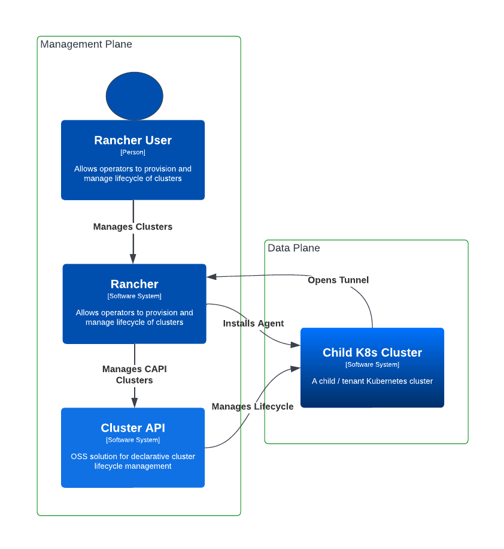

|
Ce document a été traduit à l'aide d'une technologie de traduction automatique. Bien que nous nous efforcions de fournir des traductions exactes, nous ne fournissons aucune garantie quant à l'exhaustivité, l'exactitude ou la fiabilité du contenu traduit. En cas de divergence, la version originale anglaise prévaut et fait foi. |
Présentation
|
Rancher v2.14 inclut CAPI v1.12.2 et adopte le nouveau |
Qu’est-ce que SUSE® Rancher Prime Cluster API ?
La Cluster API Extension for Rancher, également connue sous le nom de SUSE® Rancher Prime Cluster API, est un opérateur Kubernetes qui fournit une intégration entre Rancher Manager et Cluster API (CAPI) dans le but d’apporter un support complet de CAPI à Rancher.
Avec SUSE® Rancher Prime Cluster API, vous pouvez :
-
Importer automatiquement des clusters CAPI dans Rancher, en installant l’Agent de Cluster Rancher dans les clusters provisionnés par CAPI.
-
Mettre en œuvre un workflow GitOps natif pour gérer les clusters Kubernetes dans Rancher.
-
Gestion simplifiée des fournisseurs CAPI en utilisant l’Opérateur CAPI.

Naviguer dans la Documentation
Pour faciliter le démarrage avec SUSE® Rancher Prime Cluster API, nous avons structuré la documentation pour vous guider naturellement des concepts de base aux fonctionnalités avancées. Nous recommandons de suivre étape par étape, mais si vous êtes déjà familiarisé avec certains sujets, n’hésitez pas à passer aux sections pertinentes.
Didacticiels
Si c’est votre première fois en utilisant SUSE® Rancher Prime Cluster API et que vous souhaitez commencer rapidement, nous recommandons le guide Créer et importer votre premier cluster. Cela vous guidera à travers le processus d’utilisation de CAPI pour provisionner un nouveau cluster de charge de travail et l’importer dans Rancher.
Présentation
Comprendre l’architecture de SUSE® Rancher Prime Cluster API, les fonctionnalités, le concept de Certified Providers et les concepts noyaux des fonctionnalités de l’opérateur.
Référence
Contient la documentation de référence pour toutes SUSE® Rancher Prime Cluster API les ressources personnalisées.
Guide de l’utilisateur
Apprenez à utiliser SUSE® Rancher Prime Cluster API pour gérer vos clusters CAPI avec Rancher, en utilisant ClusterClass.
Guide de l’opérateur
Vous voudrez peut-être vous plonger dans des tâches de maintenance plus avancées, telles que la configuration de SUSE® Rancher Prime Cluster API pour des environnements isolés physiquement, ou certifier le fournisseur de votre choix.
Guide du développeur
Si vous êtes intéressé à contribuer à SUSE® Rancher Prime Cluster API, cette section vous guidera à travers le processus de configuration de votre environnement de développement et de compréhension des directives pour contribuer.
Dépannage
Cette section couvre les approches de dépannage de base pour les problèmes liés à SUSE® Rancher Prime Cluster API et aux fournisseurs CAPI.
Sécurité
SUSE® Rancher Prime Cluster API répond aux exigences de Niveau SLSA 3 en exécutant des builds sur une plateforme sécurisée avec des processus de build cohérents et une distribution de provenance. Cette section contient plus de détails sur les sujets liés à la sécurité.
notes de version
Restez à jour avec les derniers changements, correctifs et nouvelles fonctionnalités dans SUSE® Rancher Prime Cluster API ici.